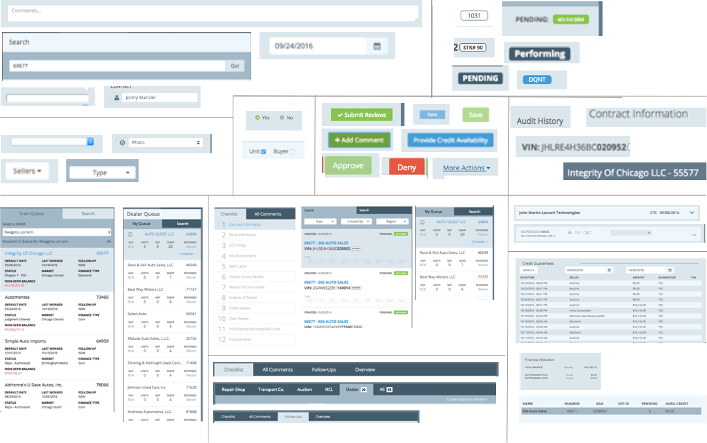
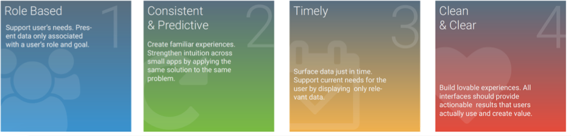
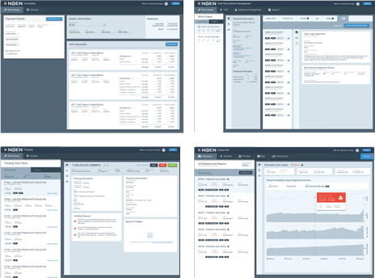
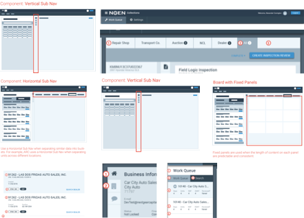

The technology team created four different apps for internal use, and there were many inconsistencies, scrum teams were building custom components for each app, and designers had minor differences across Illustrator and Sketch files.Design Lead & Strategist Visual Design (Sketch) Who: NextGear Capital When: Nov 2016 - Jan 2017
The Challenge
Supporting seven scrum teams and maintaining UI and UX best practices can be challenging. It becomes even more challenging when the development team builds and maintains web applications for each department. So, I brought the concept of a design system to the forefront and began building the Redline Design System.
Step 1: Catalog current inconsistencies
The first step in defining a design system is mapping out where inconsistencies exist. So, I mapped out the inconsistencies across four applications as a baseline.

Step 2: Catalog current inconsistencies
Next, I established design principles that all UX Designers, Researchers, Developers, Product Owners, and other stakeholders should follow.

Step 3: Apply Material Design
To speed up the design process of the design system, I chose to utilize the React Material library, which the development teams had been using.
To test Material Design against the requirements of current apps, I applied Material Design principles to the current apps.
With the four separate apps, I was able to identify a base set of components for the design system MVP.


Step 4: Apply Material Design
For the design system to be effective, I provided guidance to both the design and development on the proper use of a design system. The Guidance was established based on usability testing of the legacy systems and industry best practices.
Summary
NextGear implemented the Redline Design System with a dual implementation approach. First, all new applications utilize the one centralized design system. Second, UX debt items were created and placed into the backlog for implementation in future sprint.